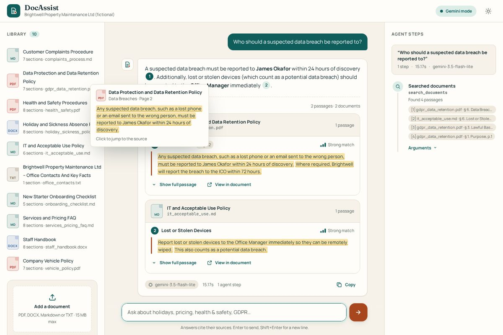

Main project
DocAssist
Chat with your company documents. You ask something like "how much holiday can I carry over?" and get a short answer with the document, section and page it came from. If the answer isn't in the documents, it says so instead of guessing.
It combines keyword and vector search, uses Gemini with tools to search, read a whole document or draft an email, and is checked against a set of test questions. It can also redact personal data on upload and keeps no chat history.
View on GitHub